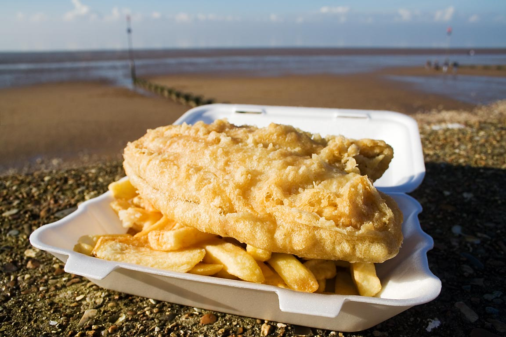
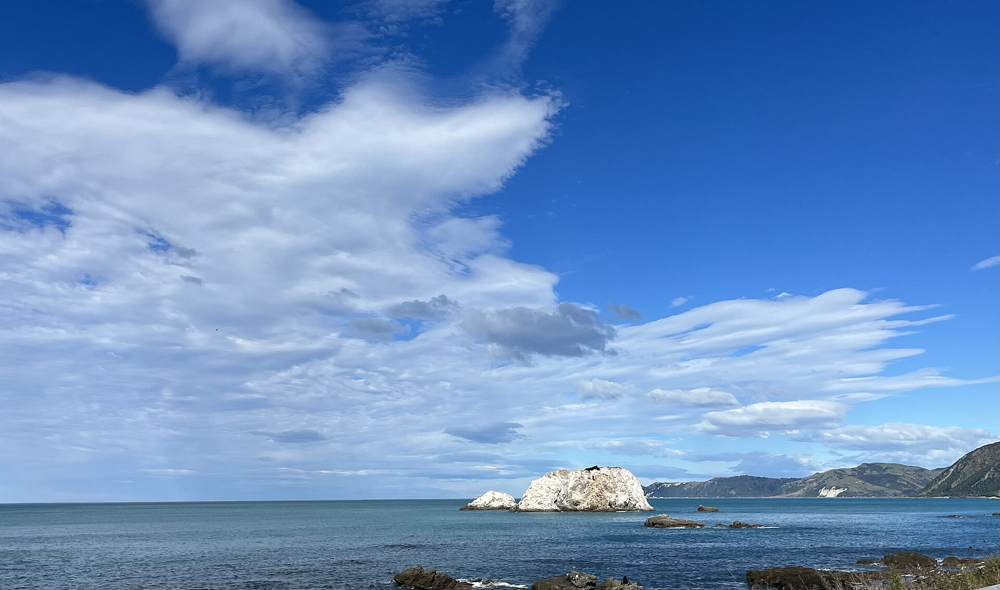
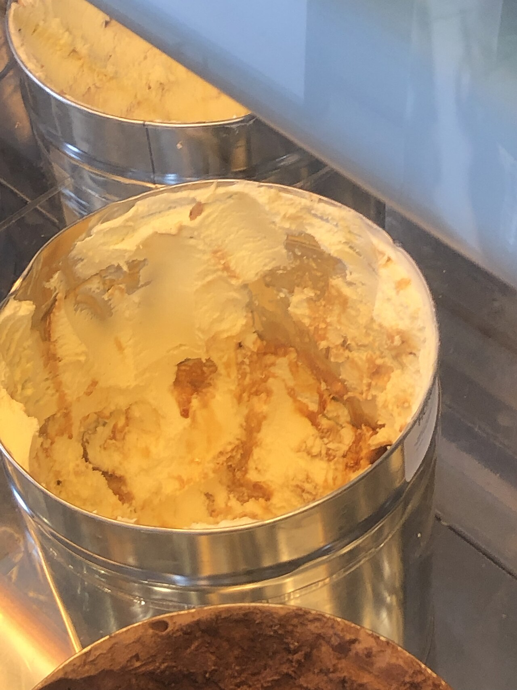

Hāngi
Food cooked in an earth oven with hot stones — lamb, pork, chicken, kumara, stuffing. Book it with a cultural evening in Rotorua (13 Dec). It is hospitality and method, not a gimmick plate.
Kai
New Zealand cooking sits on Māori kai, British settler habits, and a long coast. On this December loop you can taste steam-oven hāngi in Rotorua, mussels and fish on both islands, and South Island sweet tooth at the lake towns.
Food cooked in an earth oven with hot stones — lamb, pork, chicken, kumara, stuffing. Book it with a cultural evening in Rotorua (13 Dec). It is hospitality and method, not a gimmick plate.

Still the Sunday roast of the high country. Order it simply: mint, potatoes, seasonal greens. Grass-fed flavour is the point.

Ask for “fush and chups” if you want a smile. Snapper, tarakihi, or blue cod in the south, wrapped in paper, eaten with vinegar. A beach dinner after Cathedral Cove or Kaikōura.

Kūtai / green-lipped mussels are a New Zealand species, often steamed with white wine. Kaikōura is crayfish country — pricey, local, worth splitting. Whitebait fritters appear in season on West Coast and Southland menus.

Hokey pokey is vanilla ice cream with honeycomb toffee — a dairy-shed classic. Pavlova (meringue, cream, kiwi fruit or berries) is the Christmas dessert argument New Zealand won in the kitchen, if not always in Australia.

A proper pie (mince and cheese, steak and mushroom) is road-trip fuel. South Island cheese rolls are grilled bread with a savoury spread. Lemon & Paeroa (L&P) is the national soft drink. Add mānuka honey, a flat white, and Sauvignon blanc from Marlborough after the ferry.
Also look for: rewena bread, boil-up, kūmara, Bluff oysters if you hit the season, feijoas in late autumn (not December), and a bakery custard square.